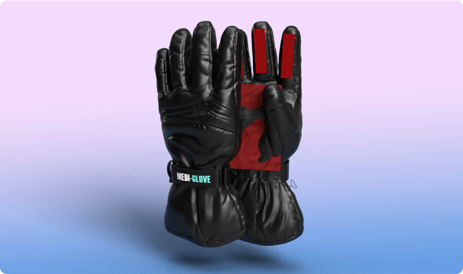
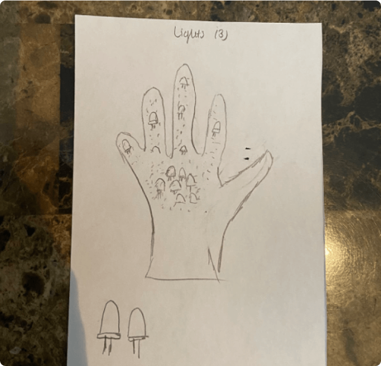
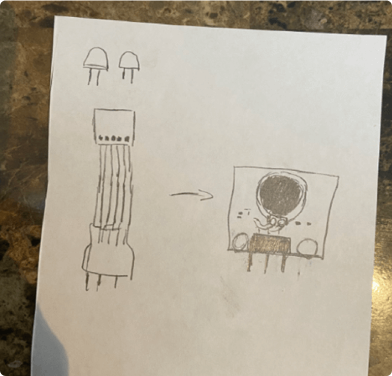
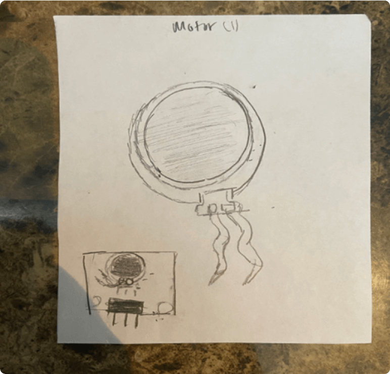

Mediglove
2018

Mediglove was a group project I worked on during my time at Wilfrid Laurier University. We were tasked with creating a product that exhibits inclusive design and interacts with the somatic experiences of the user. We decided to seek the medical field as our basis of improvement, and decided to tackle CT scans.
While CT scans are a vital part of the cancer screening process, it’s no secret that they are very intrusive and non-inclusive. They’re expensive, large, time-consuming, and not to mention lackluster in the user experience department. One of the main issues with CT scans is the patient/user must conform with the machine. What if we could turn the tables and make the machine conform with the user?
This is where the idea for Mediglove was born; a portable and wearable CT scan glove, capable of performing CT scans from virtually anywhere.
To begin, we put together a low-fidelity prototype of what we envisioned for our design. A few notable aspects of our prototype;
- We wanted to simulate the texture of the sensors on the glove, so we attached bubble wrap and beads to the outside of the glove. We placed these on the hotspots of the hand, including the fingertips and palm.
- We wanted to give the user some sort of feedback to alert them of any detection of cells. We decided to use heat as feedback, and placed hand warmers inside the gloves to simulate this.
After presenting the first round of our project, we obtained some valuable feedback that we would carry throughout the rest of the semester: How would we ensure protection of both the user and the patient from the harmful rays of radiation that CT scans emit?
We decided to tackle this issue through a number of ways.
Firstly, we decided to outfit the glove with radiation shielding to protect both the user and the patient from the harmful rays. The patient would also be required to wear a radiation vest.
Secondly, we outfitted the glove with technologies to not only interact with the user's somatic senses, but to also increase the safety of the glove itself. We added LED indicators to notify the user when the glove is on and emitting radiation. This is to reduce user error that could be dangerous to both the user and patient.
We also added vibrators inside of the glove to notify the user when the glove senses potential cancer cells. We thought this was a much more intuitive form of interaction than heat sensors.
Lastly, we wanted to allow the product to have to ability to connect to the internet. This would not only allow data to be stored for later use, but it would also act as visual feedback for the user and patient. The device would connect through bluetooth to provide a 3D simulation of the scanned area.
Creating the Final DesignAfter everything was said and done, we mocked up a high-fidelity 3D prototype of the final designs. While the technology may not be present in the current day, it's critical to have an open mind for speculation.